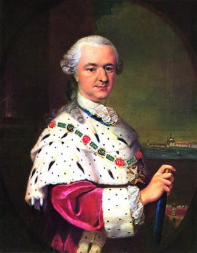
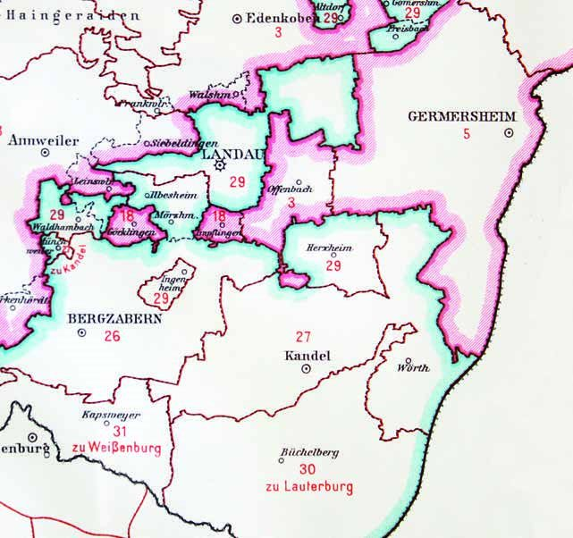
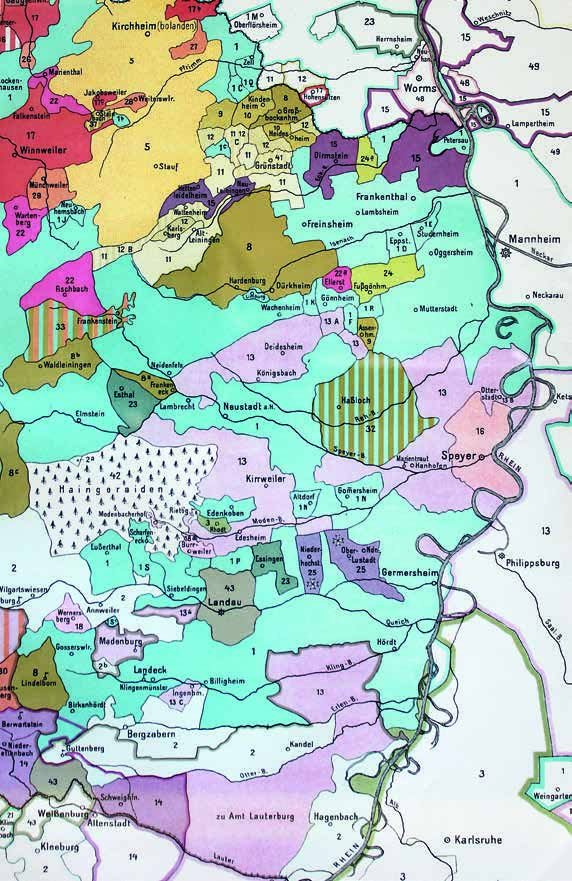

I. Die Zeit vor der Gründerfamilie · Kapitel 2
Das gesellschaftspolitische Umfeld vor der Unternehmensgründung
Kurfürst Carl Theodor (10. XII. 1724 † 16. II. 1799)
l. Die Zeit vor der Gründerfamilie Das gesellschafts – politische Umfeld der Zeit vor der Unternehmensgründung
Die vornapoleonische Zeit stand im Zeichen der Aufteilung der Pfalz in 43 Adels- und klerikale Herrschaftsgebiete mit igener Zoll und Steuerhoheit. Diese für jede wirtschaftliche Entwicklung schädliche Zergliederung des 18. Jahrhunderts (Karte 1789, Geschichtsatlas. W. Winkler, 1935) war für den Weinbau besonders nachteilhaft. Wegen fehlendem unmittelbarem Anschluss an den Wasserweg Rhein, Wiederaufbau-Schwierigkeiten nach den Kriegsschäden (30 jähriger Krieg, Zerstörung der Weinberge durch die Franzosen im Erbfolgekrieg unter Melac und dann der Revolutionsarmee), konnte sich der Weinbau erst mit der napoleonischen Gebietsreform nach 1801 (Zusammenschluss zu den Departments Donnersberg und Bas-Rhin) neu entwickeln. Im 19. Jahrhundert entstand eine grenzüberschreitende Weinwirtschaft. Friedrichs Vater Georg Böhm (geb. 1810) hatte diese Chance erkannt und ein bedeutendes Weinhandels- und Komissionsgeschäft aufgebaut. Auch das bedeutende Familienunternehmen des Carl Jos. Hoch, in welches Georg Böhm einheiratete, wurde in dieser Zeit gegründet (1828).
Das gesellschafts – politische Umfeld der Zeit vor der Unternehmensgründung vor Napoleon: 1. Kurfürstvon der Pfaltz 2. Herzog vonZweibrücken 3. Markgraf von Baden 4. Fürst von Nassau-Saarbrücken 5. Fürst von NassauWeilburg 6. Wild-und Rheingrafen von Grumbach 7. Wild-und Rheingrafen von Rheingrafenstein 8. Fürst von Leiningen-Hardenburg-Daschburg 9. Graf von Leiningen-Guntersblum 10. Graf von Leiningen- Heidesheim 11. Graf von LeiningenWesterburg-Altleiningen 12. Graf von LeiningenWesterburg-Neuleiningen 13. Hochstift Speier 14. Gefürstete Prosptei Weißenburg 15. Hochstift Worms 16. Reichsstadt Speier 17. Grafschaft Falkenstein 18. Graf von der Leyen 19. Grafschaft-HanauLichtenberg (zu HessenDarmstadt gehörig) 20. Herrschaft Reipoltskirchen 21. Grafen von Sickingen 22. Grafschaft Wartenberg 23. Freiherr von Dalberg 24. Freiherr von Hallberg 25. Johanniterorden 26-30. Verschiedene kleine reichsritterschaftliche Gebiete 42. Haingeraiden 43. König von Frankreich
Mit Napoleon entfielen die Grenzen. Nur in der Südpfalz blieb die Grenze zu den französischen “Protektoraten”


